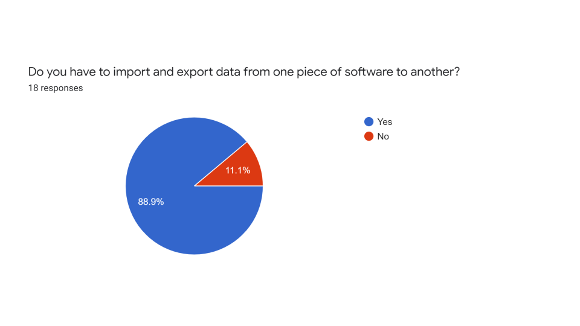
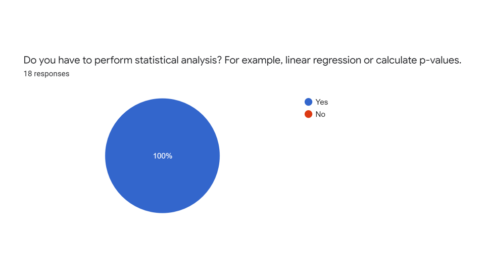
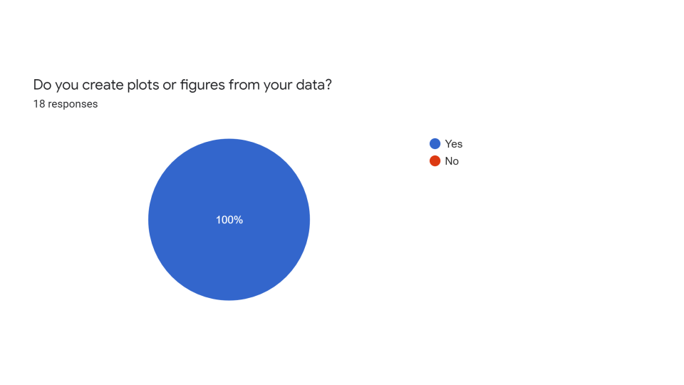
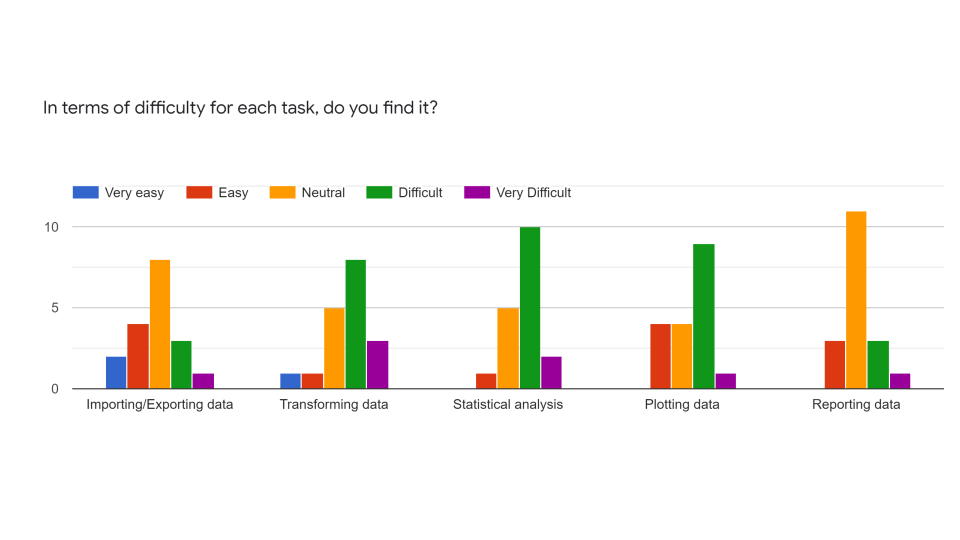
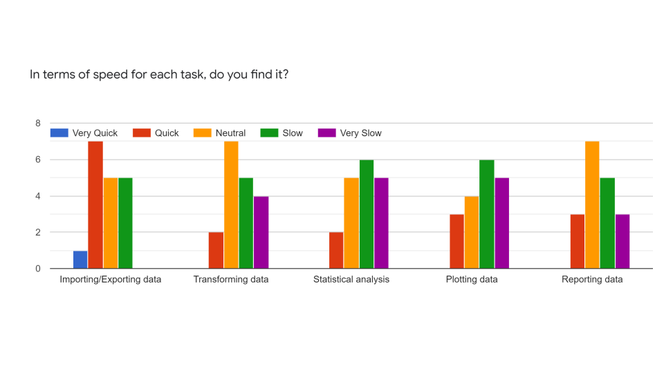
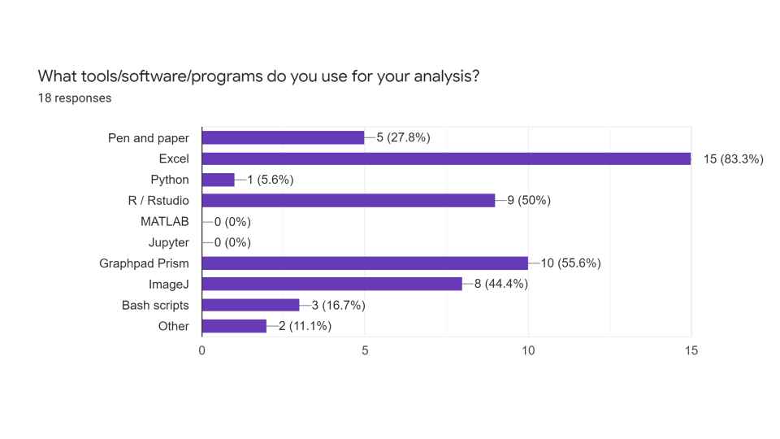
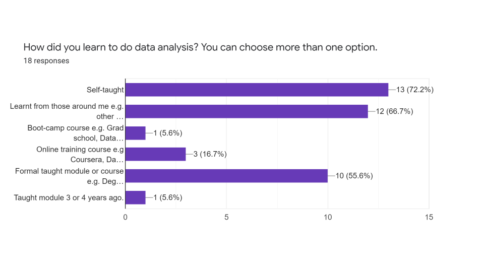
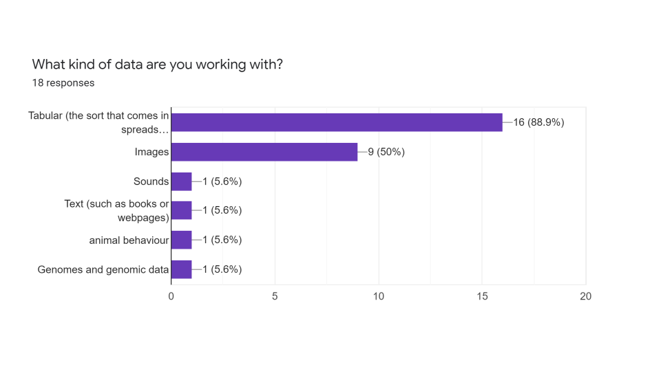
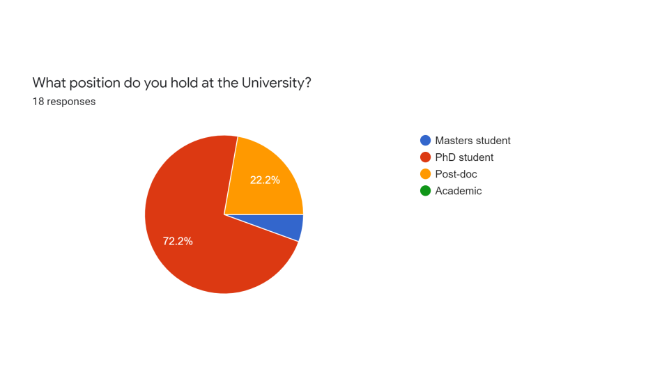
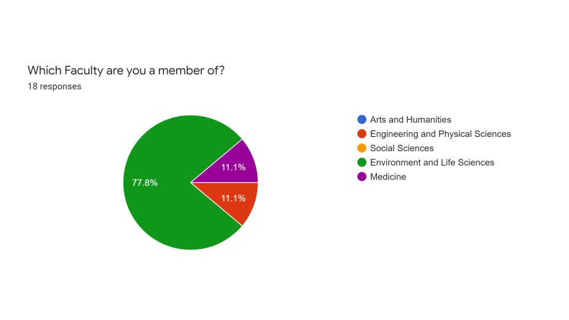

Summary and reflections
Coding togetheR was run as a series of two hour workshops based on my experiences of working as a member of The Carpentries community, as a member of the global R community, and as the name suggests from reading Greg Wilson’s Teaching Tech Together. There were seven workshops weekly from the 10th October 2019 until the 21st November, and then there were two further workshops on the 9th and 16th of January. (We had a break during the industrial action.)
The course was intended to be open to 20 learners from across the University, but after opening application on a first come, first serve basis to those on the Life Sciences mailing list, the course was filled within an hour of advertisement by learners almost exclusively from Biological Sciences and Medicine, including three additional learners to the original 20, making a total of 23 learners registered.
The aim of the workshops was to provide a question driven introduction to working with tabular data in R by introducing:
- the R language in the RStudio interactive development environment.
- how to organise analysis into a workflow.
- how to import and export data and how the atomic data types are represented in R.
- data transformation using R.
- visualising data using R.
The course materials exist as an online book and some accompying slides.
As measured by the number of workshop survey respondents,
the workshops began with 23 learners and finished with 8 learners. A 65% attrition rate,
worse than my prediction of 50%.
Despite my best intentions, and as a result of my fairly poor attempts to recruit others, the workshops were led exclusively by me in contradiction of the
“never teach alone” rule. It’s speculation, but this may
in part account for the higher than expected attrition rate, as additional teachers
and teaching assistants would, in my opinion, have improved the learning experience.
Having a number of teachers is certainly one of the best things about a Carpentries workshop
in terms of creating a fun atmosphere and feeding back to each other within the workshop about
what is working and not working so well.
Prior to the workshops I also asked the learners to complete a survey designed to indicate their needs in order to help me align the lessons accordingly. The results are below in the data skills survey section.
The primary motivation for these workshops is from my own experience as someone who in 2015 didn’t regard myself as someone who coded, but realised that I needed to learn to better data analysis skills in order to successfully do my research, and in a more efficient and reproducible way. Through an introduction to the R community via Simply Statistics, I discovered that coding, and its associated skills and community met that unmet need. I subsequently observed that there are other people in my immediate environment in similar positions to myself, struggling with their data too, but unsure of how to get started, and learning in largely ad-hoc ways.(This also reflected in the answers to data skills survey below.) This observation led me to join the Carpentries community and my involvement with the Research Software Group in Southampton. In the last decade there has been an explosion of free availability of materials for teaching coding and data analysis in R and Python: The Carpentries, R for Data Science, Tidy Tuesdays, and Teaching Tech Together to name a few. Hence the materials I’ve put together largely draw from these existing materials, and there exist far more materials than can be covered in nine two hour sessions.
The hypothesis I’ve formulated is that there exists a large cohort of people - not just researchers and students, but also administrators and others - within the University of Southampton who don’t identify as coders, but who actually do code informally through their use of Excel, Graphpad, Google, and other software, who would benefit from some foundational coding skills if given the opportunity to learn, and that these skills were taught from the stance of “What do you need?” and “Let’s work this out together.” rather than “You should learn this.” or “People who use Excel are idiots.” Moreover that anyone who would like to learn these foundational skills should be do so within the University. Thirdly, that whilst this requires support from the top - those with the money and power - the form of the solutions should be community driven. A big reason why Coding togetheR is sub-optimal is that it has largely been driven by me, with all the errors and biases that I bring as an individual, when many eyes would optimise. I’m not sure what Universities think they are for any more, but I’d like to think there is still room for just helping each other and doing things because they are intrinsically worthwhile, rather for than money, metrics or prestige. I’ve not been able to test my hypothesis yet, let alone demonstrate anything concrete that would convince those with power and money to invest in these ideas, but this was very much starting where I am, with what we have and who is around me, in order to take the first step in understanding what we should be doing. I would still very much like to do a proper face-to-face data skills survey of a representative sample of people across the University to assess what needs people actually have and establish a bit of ground truth upon which to build an evidence base of what’s needed and what works to meet those needs.
The motivation for creating a series of workshops was in part from the feedback received at the Carpentries workshops I’ve worked on which are usually one or two intensive days, and learners express a desire for something with a lower cognitive load, and that incorporates spaced repetition. Weekly workshops seem like a good way to address that point. Secondly learners also feed back that they particularly like live coding and style of teaching i.e. formative and summative assessments, and the chance to see mistakes and how to correct them in real time. (In the final workshop the learners spotted the missing comma was in a function when their code was working, but mine wasn’t!).
Given the attrition rate, comparison of the anonymous pre and post-workshops surveys (see survey results) carried out is not massively informative. But the data such as it is, does indicate that of the eight learners completing the post workshop survey, only one said they now would not be able to use R to import, export, transform and plot data from a spreadsheet.
Qualitative feedback was in line with that received at Carpentries workshops in that the process of writing code with others, slowly, and use of stickies to indicate when learners are OK or not were the most useful aspects. As for improvements, there were several requests for homework so learners could practice between sessions, as well as for a more interesting and wider range of data sets. Not much love for the Portal Rodent Survey, and I think I agree it is a rather dull data set. There was also a request for more sessions, and one of the main things I learnt myself was that the content appropriate for two hours is far less than I thought originally.
In seeing some of the learners back at their research since the workshops, I’ve observed difficulties in translating concepts covered in the workshops to their own work e.g. Recognising when matching observations between datasets requires using a join function. Problem recognition is ubiquitous problem in itself. My anecdotal experience of asking researchers (including myself) at all levels from Undergraduate to Professor what the question is they are trying to answer, is that they struggle to provide a concise response, and this is usually the start of an iterative process to whittle down from the general to the specific. I don’t know whether this process is something that has a more formal approach in the context of teaching coding - ironically I couldn’t figure out how to Google it - or is just what people informally refer to as “experience”. It could simply be that the summative assessments weren’t actually doing what they were supposed to do in terms of demonstrating whether I had conveyed the concepts. I think this is another example of why one shouldn’t teach alone, and that this sort of issue would be more easily addressed within a group leading to better lesson design and delivery.
If this isn’t to be the end of the line, I think the next steps require me to follow Greg Wilson’s advice about building relationships, particularly with some social scientists and the rest of the Research Software Group.
I should also note here that a broader survey was carried out by the Research Software Group at the University of Southampton in 2019. It was broader in the sense that it aimed to survey software development as well as use, across all levels of expertise, rather than my focus on those who don’t think of themselves as software users/coders, and on tool use. It presents a picture of a University full of free ranging software users and developers in need of better support, however it’s limited by the issue of capturing only those who responded to the email, and are comfortable with the language of computer science such as “script” or “clean some data”. I’d be interested to see a question about how people from different disciplines interpret the word “software” in another survey and how it compares with the authors own description. I was struck by the omission of Microsoft Office or Google or other well known brand names from the description of what software is. Given the ubiquity of MS Office in generating research results, and search engines as a tool, I wonder what an A-B version of survey with a more technical versus less technical description would have done to the survey answers? Possibly nothing! But I guess that’s one motivation for engaging social scientists in this challenge. The full report can be found here.
Coding togetheR surveys results
The learners were asked these five questions before and after the workshop series:
- Could you import data from a spreadsheet and create a new variable (column) as a function of the existing variables? For example create a new column in the table containing the mean value of three other columns?
- Could you import data from a spreadsheet and subset specific rows and columns from the data and assign them to a new object?
- Could you import data from a spreadsheet and use a function to tell you number of observations (rows) and variables (columns) the data set contains?
- Could you import data from a spreadsheet, select two variables, and then create a plot of points to explore the relationship between these variables on an x-y axis?
- Would you be able to export tabular data in R to a spreadsheet, for example a csv or excel file?

Data skills survey
18 of the 23 learners responded to the data skills survey prior to the workshops commencing.
         